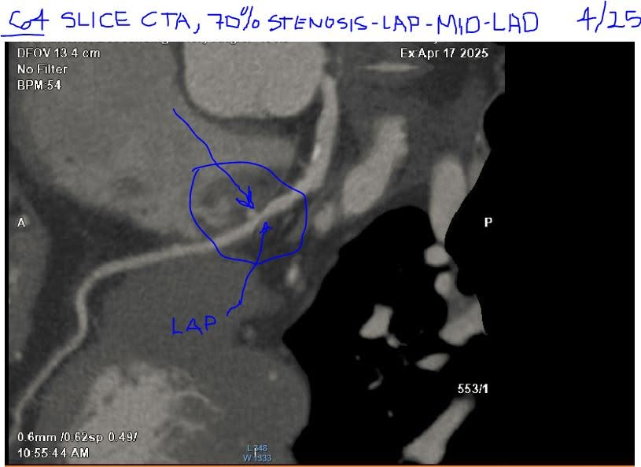

Group member reports 'widowmaker' soft plaque regression on 6 g/day EPA, citing EVAPORATE
Louis shares a member's case: a 70% stenotic soft plaque in the LAD shrank on CCTA after about 6 months on 6 g/day OTC EPA plus baby aspirin and no statin. He links it to EVAPORATE and warns high-dose fish oil can raise AFib risk.